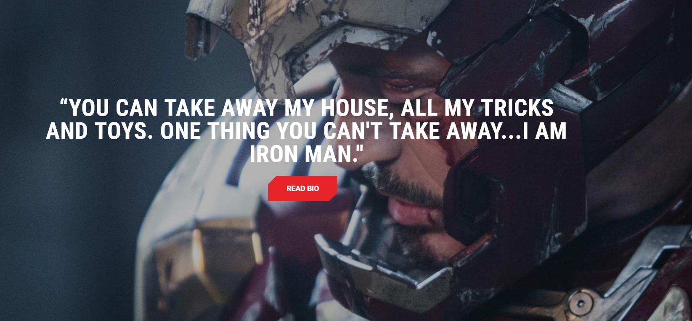

Genius inventor Tony Stark continued his father Howard Stark’s weaponry business after his parents’ untimely deaths and flew it to even greater heights of innovation. While in Afghanistan to demonstrate a new missile for the U.S. military, Stark’s convoy came under fire by a terrorist group known as the Ten Rings and he was severely wounded. Taken prisoner by the group, Stark awoke in their headquarters to learn that shrapnel near his heart had nearly cost him his life, but swift action by scientist and fellow prisoner Ho Yinsen—who had inserted a powerful electromagnet in Stark’s chest—would prolong it temporarily.
在他们要求为他们制造新武器之后，他的俘虏失去了作用，斯塔克用RT替换了磁铁，RT是他父亲Arc Reactor最初设计的微型版本。此外，他和银森创造了一套粗糙的盔甲，可以为他们提供逃脱的手段。虽然Yinsen牺牲了自己，以便让Tony有足够的时间来支持他们与恐怖分子的俘虏作斗争。
Arc Man技术的核心是Arc Reactor。由Howard Stark设计，但由Tony Stark增强和加强，Reactor提供了一个干净，易于管理的能源，具有令人难以置信的输出，可以适应大多数任何东西。起初是一件大型设备，年轻的Stark将这项技术小型化为“RT”，这是一颗人类心脏的大小，并且非常适合用来装备他的盔甲。在他的朋友詹姆斯罗德中校的帮助下，发明家回到家中，并迅速宣布斯塔克工业公司退出武器业务。他的私人助理Pepper Potts支持突然的课程逆转，但他父亲的老朋友和商业伙伴Obadiah Stane坚决不同意他所看到的轻率决定。 斯塔克在他的实验室加班加点精简盔甲，当他完成时，出现了一个新角色：钢铁侠。在他发现Stane非法将Stark武器卖给Ten Rings后，他穿上了盔甲返回阿富汗并阻止该团体使用它们。后来，他还了解到斯坦已经支付了十个戒指来杀死他，并且一直在斯塔克的背后工作，以便偷走整个公司。那个年长的男人然后强行从Tony的胸口取出了RT，让他老朋友的儿子死了。但是，波茨帮助斯塔克将他原来的鹅卵石拼凑的RT插入他的胸口，而钢铁侠又飞了起来。。